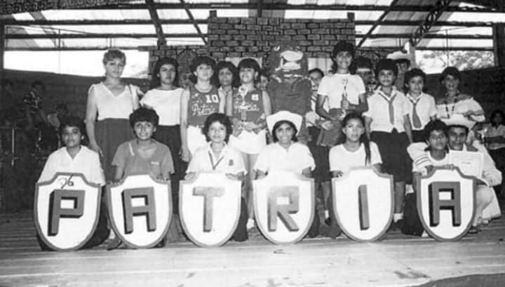

Historia
El Instituto Patria nació con el propósito de ofrecer educación media de calidad en La Lima, Cortés. A lo largo de las décadas, hemos crecido en población estudiantil y oferta académica, manteniendo siempre nuestro compromiso con la comunidad.
A principios de 1955, por iniciativa de algunos ciudadanos de La Lima, se organizó la sociedad Pro Instituto Patria, encabezada por empleados y ejecutivos de la empresa TRRCo., maestros, autoridades civiles y otras personalidades, con el propósito de crear una institución de educación media. Inicio sus labores en Febrero 1956, en la planta baja de la escuela Esteban Guardiola, con una matrícula inicial de 275 alumnos en las áreas de Magisterio, Bachillerato y Comercio, en esos años fue de carácter privado, financiado por los padres de familia pagando las mensualidades de sus hijos. Años después fue oficializado por el Gobierno de la Republica con el nombre de instituto Departamental Patria, convirtiéndose en público y de enseñanza gratuita. El 20 de Julio 1957 inauguró su propio edificio de una planta, local en el que funciona hasta hoy. En 1959 se llevó a cabo la primera graduación, en las carreras de Magisterio, Comercio y Bachillerato. Reseña por Salvador Lopez /Transcripción by Barracón LaLima

Hitos
- Fundación: Inicio de operaciones con una primera generación de estudiantes.
- Expansión: Construcción de nuevos salones y laboratorios.
- Actualidad: Integración de plataformas digitales y metodologías activas.
Regresar al inicio.